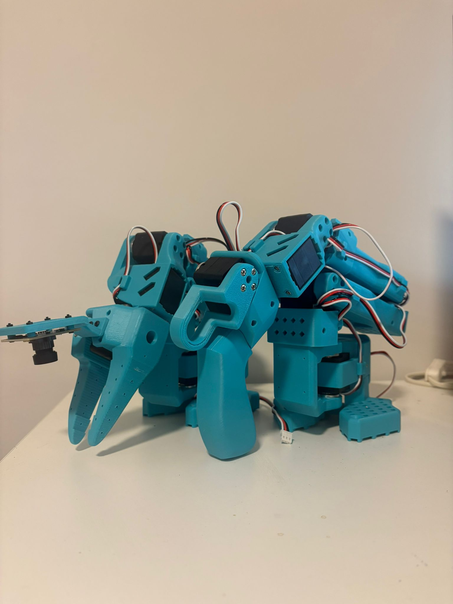
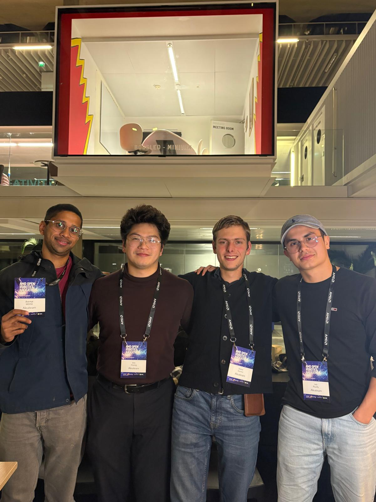
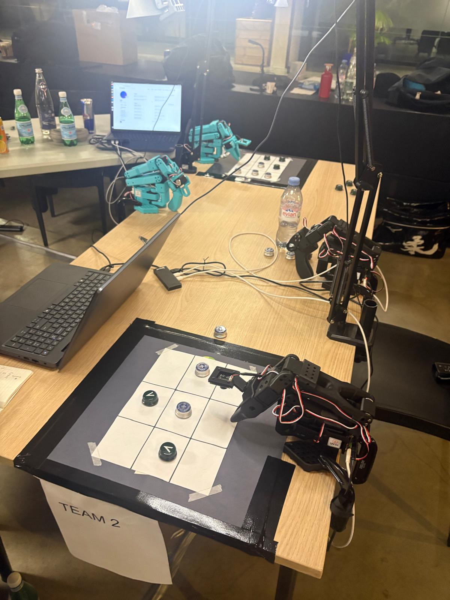
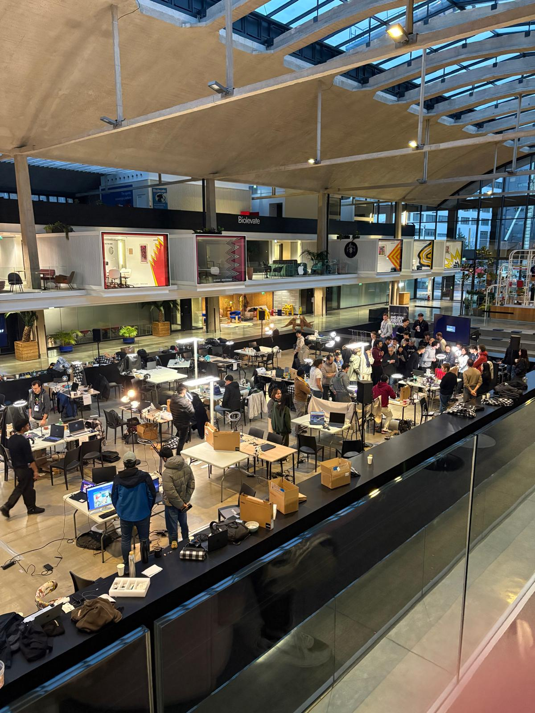

S101-ARM – Robotics Project
Construction and hardware integration of a low-cost, open-source robotic arm designed for AI research and Imitation Learning. The project focuses on building a 'Follower' arm capable of precise teleoperation and data collection for future neural network training.
Mechanical Assembly & Integration
I executed the full electromechanical integration of the 6-axis manipulator (Follower/Leader Configuration). This final stage required assembling the printed components with the calibrated actuators, transforming individual parts into a cohesive kinematic chain.
- - Kinematic Assembly: Assembled Pitch, Roll, and Gripper mechanisms, integrating bearings to reduce friction to a minimum.
- - Cable Management: Routed servo cables through hollow structural parts to prevent binding during full Range of Motion (ROM).
- - Mechanical Validation: Verified passive back-drivability, ensuring the motors can be manually manipulated smoothly for teleoperation tasks.

AMD Robotics Hackathon 2025
I participated in the AMD Robotics Hackathon 2025 hosted by AMD and Hugging Face at Station F, Paris. Our team developed a robot that played Tic-Tac-Toe using LeRobot and imitation learning.
We created a complete robotics pipeline integrating vision, decision-making via a Vision-Language Model (VLM), and motion execution. Despite challenges during dataset merging, this experience taught me tremendously about imitation learning and practical robotics constraints.
Thanks to AMD and Hugging Face, to Steven Palma and Guruprasad MP, and to my teammates Eric Huang, Victor Gomez, and Ammar Moise for this incredible collaboration.



Robot in Action
Example of a training episode recorded during the hackathon, demonstrating the robot's teleoperation capabilities and data collection process for imitation learning.
(Training Episode Example)